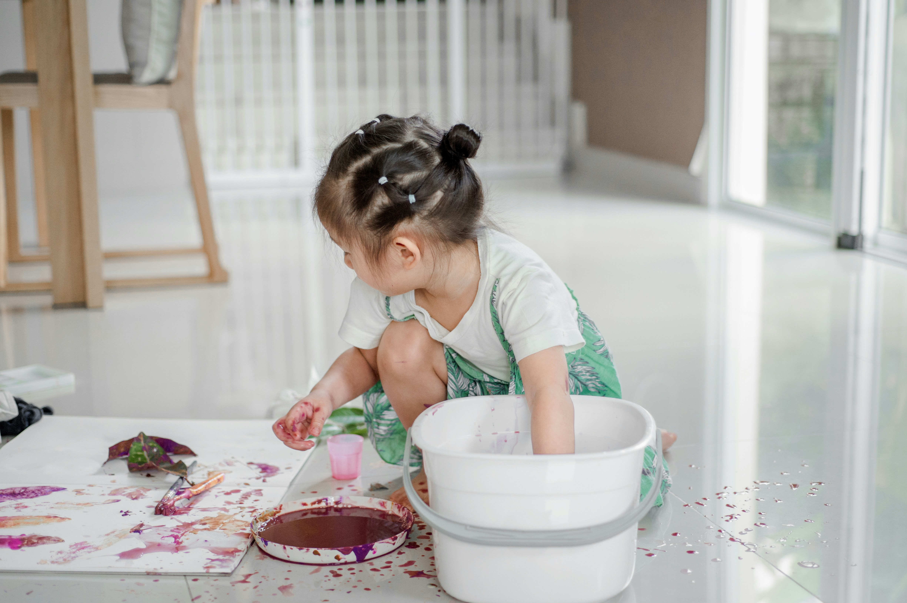

Understanding Child Development
To dive to the next page press the right arrow key on your keyboard (→)

How do children learn and grow?
Child development refers to the process through which children typically grow and develop from birth through adolescence. It involves physical, cognitive, emotional, and social changes that occur as children mature.
Stages of Child Development
Infancy (0-1 year)
Babies learn to crawl, walk, and explore their environment. They develop basic motor skills and begin to understand language.
Toddlerhood (1-3 years)
Toddlers become more independent, learn to speak in sentences, and explore their surroundings through play.
Here are three things you don't know about Toddlers.
- Imaginative Play: Toddlers engage heavily in imaginative play, which helps them develop cognitive skills by experimenting with different scenarios.
- Rapid Brain Development: Toddlers' brains grow to about 80% of adult size by age 3. This period is crucial for cognitive development and learning.
- Curiosity and Exploration: Toddlers are tenable to have intense curiousity about their environment, constantly experimenting to learn about how things work and fit together, even if they end up marring things.
Preschool (3-5 years)

Children develop more complex social skills, such as sharing and taking turns. They also begin to learn basic academic skills like counting and recognizing letters.
School-age (6-12 years)

Children refine their motor skills and cognitive abilities. They develop friendships, learn to solve problems independently, and acquire more advanced academic knowledge.
Below are three funny facts about children in these age range.
- Literal Interpretations: In this age group, children take language literally. For example, if you tell them "it's raining cats and dogs," they might look outside anticipatin to see animals falling from the sky!
- Honesty: Kids in this age range are notorious for their honesty, sometimes to the point of embarrassment for adults. They have no qualms about pointing out things like someone's weight gain or asking loudly why someone has a big nose.